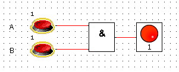
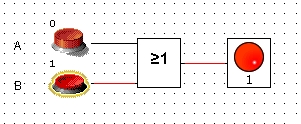
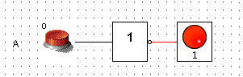

In einem echten Prozessor gibt es kein „∧“ oder „∨“ – nur elektrische Bauteile, durch die Strom fließt oder nicht. Wie wird aus einem booleschen Ausdruck wie A ∧ B ∨ C eine Schaltung?
Boolesche Ausdrücke können mithilfe von logischen Gattern in elektronischen Schaltungen umgesetzt werden. Ein Gatter hat einen oder mehrere Eingänge und einen Ausgang; „1“ steht für Spannung an, „0“ für keine Spannung. Die grundlegendsten Gatter sind UND, ODER und NICHT.
UND (AND-Gatter)
Das UND-Gatter gibt nur dann „wahr“ aus, wenn alle Eingänge „wahr“ sind.

AND-Gatter – LogicSim
ODER (OR-Gatter)
Das ODER-Gatter gibt „wahr“ aus, wenn mindestens einer der Eingänge „wahr“ ist.

OR-Gatter – LogicSim
NICHT (NOT-Gatter)
Das NICHT-Gatter kehrt den Wert des Eingangs um. Aus „wahr“ wird „falsch“ und umgekehrt.

NOT-Gatter – LogicSim
Weitere Gatter: XOR, NAND und NOR
Es gibt noch weitere Gatter, die in der Praxis sehr häufig vorkommen. Sie lassen sich alle aus UND, ODER und NICHT zusammensetzen, werden aber als eigene Bausteine angeboten, weil sie kleiner und schneller sind.
XOR (Antivalenz, „entweder … oder“, Zeichen ⊕): wahr, wenn die Eingänge verschieden sind. A ⊕ B = (¬A ∧ B) ∨ (A ∧ ¬B)
NAND („nicht und“): das negierte UND. A NAND B = ¬(A ∧ B) – nur falsch, wenn beide Eingänge wahr sind.
NOR („nicht oder“): das negierte ODER. A NOR B = ¬(A ∨ B) – nur wahr, wenn beide Eingänge falsch sind.
Im Schaltsymbol erkennt man die Negation an einem kleinen Kreis am Ausgang des Gatters.
Beispiel 1 einfach Schaltung zu f = A ∨ ¬B
f = A ∨ ¬B wird mit einem NICHT-Gatter an B gebaut, dessen Ausgang zusammen mit A in ein ODER-Gatter läuft.
A
B
¬B
A ∨ ¬B
0
0
1
1
0
1
0
0
1
0
1
1
1
1
0
1
Lösungsschritte:
Was: Die Formel nach Bindungsstärke zerlegen: Zuerst wird ¬B gebildet, danach A ∨ ¬B. – Warum: ¬ bindet stärker als ∨. Die Reihenfolge der Auswertung ist also auch die Reihenfolge der Gatter vom Eingang zum Ausgang.
Was: Ein NICHT-Gatter an Schalter B anschließen. – Warum: Das ODER braucht als zweiten Eingang ¬B und nicht B.
Was: Schalter A und den Ausgang des NICHT-Gatters in ein ODER-Gatter führen und daran die LED anschließen. – Warum: Der Hauptoperator der Formel ist ∨. Sein Ausgang ist der Ausgang f der Schaltung.
Was: Die Wahrheitstabelle mit der Hilfsspalte ¬B aufstellen und in LogicSim alle vier Belegungen durchschalten. – Warum: Erst der Vergleich aller Zeilen zeigt, dass die Schaltung wirklich die Formel umsetzt.
Probe: Ein ODER liefert nur dann 0, wenn beide Eingänge 0 sind, hier also A = 0 und ¬B = 0, d. h. B = 1. Genau die Zeile A = 0, B = 1 ist die einzige 0-Zeile der Tabelle. Die Schaltung braucht 2 Gatter.
Beispiel 2 komplex Alles aus NAND
Weil NAND funktional vollständig ist, bestehen viele Chips intern fast nur aus NAND-Gattern. So entstehen die Grundgatter:
NICHT: beide Eingänge eines NAND verbinden: A NAND A = ¬(A ∧ A) = ¬A (Idempotenz).
UND: hinter ein NAND ein zweites NAND als NICHT schalten: ¬(A NAND B) = ¬¬(A ∧ B) = A ∧ B.
ODER: beide Eingänge erst negieren, dann NAND: ¬A NAND ¬B = ¬(¬A ∧ ¬B) = A ∨ B (De Morgan).
Für ein ODER braucht man also drei NAND-Gatter. Die Gesetze aus 2.5 sind damit direkt Bauanleitungen für Hardware.
Lösungsschritte für das ODER aus NAND:
Was: Das Ziel A ∨ B doppelt negieren: A ∨ B = ¬¬(A ∨ B). – Warum: Die doppelte Negation ändert nichts am Wert. Sie erzeugt aber das äußere ¬, das ein NAND mitbringt.
Was: Die innere Negation mit De Morgan umformen: ¬(A ∨ B) = ¬A ∧ ¬B, also A ∨ B = ¬(¬A ∧ ¬B). – Warum: Jetzt steht die Form ¬(X ∧ Y) da, und das ist genau X NAND Y.
Was: ¬A und ¬B mit je einem NAND herstellen, dessen beide Eingänge verbunden sind (A NAND A = ¬A). – Warum: Es stehen nur NAND-Gatter zur Verfügung. Die Idempotenz A ∧ A = A macht aus einem NAND ein NICHT.
Was: Die Ausgänge ¬A und ¬B in ein drittes NAND führen. – Warum: Es bildet ¬(¬A ∧ ¬B) = A ∨ B. Insgesamt sind das 3 NAND-Gatter.
Probe für das ODER aus drei NAND: A = 0, B = 0 → ¬A = 1, ¬B = 1 → 1 NAND 1 = 0 = A ∨ B. A = 1, B = 0 → ¬A = 0, ¬B = 1 → 0 NAND 1 = 1 = A ∨ B. Die übrigen zwei Zeilen prüfst du genauso; in allen vier Zeilen stimmt das Ergebnis mit der ODER-Spalte der Tabelle oben überein.
Praxisbezug: Gatter im echten Leben
Alltag: Smart-Home-Regeln und Alarmanlagen verknüpfen Sensoren wie Gatter. Der Speicher in deinem USB-Stick, deiner SSD und deinem Smartphone heißt „NAND-Flash“, weil seine Speicherzellen wie ein NAND-Gatter verschaltet sind. Und die Wechselschaltung im Treppenhaus ist ein XOR.
Berufsleben:
Elektroniker/in bzw. Elektrotechnik-Ingenieur/in: entwirft Steuerungen, z. B. für Gebäudetechnik oder Fertigungsanlagen, und setzt dafür Logikbausteine oder speicherprogrammierbare Steuerungen (SPS) ein.
Chip- und Hardwareentwickler/in: baut aus Millionen solcher Gatter Prozessoren und Speicherchips – in Dresden z. B. bei Infineon, GlobalFoundries oder Bosch; die Region „Silicon Saxony“ ist einer der größten Mikroelektronik-Standorte Europas.
Das Wichtigste
Logikgatter: Ein Logikgatter ist ein elektronischer Baustein, der eine boolesche Verknüpfung seiner Eingänge berechnet. Jedem Operator entspricht ein Gatter: ∧ = UND-Gatter (AND), ∨ = ODER-Gatter (OR), ¬ = NICHT-Gatter (NOT).
Funktionale Vollständigkeit: Mit UND, ODER und NICHT lässt sich jede boolesche Funktion als Schaltung aufbauen (z. B. über ihre KDNF aus 2.8). Man nennt diese drei Gatter deshalb funktional vollständig. Schon das NAND-Gatter allein ist funktional vollständig.
Wahrheitstabelle aller Grundgatter mit zwei Eingängen:
A
B
UND A ∧ B
ODER A ∨ B
XOR A ⊕ B
NAND ¬(A ∧ B)
NOR ¬(A ∨ B)
0
0
0
0
0
1
1
0
1
0
1
1
1
0
1
0
0
1
1
1
0
1
1
1
1
0
0
0
Das NICHT-Gatter hat nur einen Eingang: A = 0 → 1, A = 1 → 0.
Grundaufgaben
Aufgabe 3.1.1: Erste Schaltungen in LogicSim AFB I
Öffne das Programm LogicSim (Laufwerk Programme (P:)) und mache dich mit der Oberfläche vertraut. Erstelle eine UND-, eine ODER- und eine NICHT-Verknüpfung mithilfe der Logikgatter. Beschrifte die Eingänge.
Erstelle die Schaltung für den folgenden Term: A UND B ODER C. Das Ergebnis soll als „D“ ausgegeben werden. Überprüfe die korrekte Funktionsweise für alle Eingabemöglichkeiten (zum Beispiel mit einer Wahrheitstabelle).
Aufgabe 3.1.2: Bewässerungsanlage AFB II
Eine Bewässerungsanlage soll nur wässern, wenn der Wettersensor gutes Wetter meldet (gekennzeichnet mit „s“) und der Bewegungssensor niemanden im Garten erkennt (gekennzeichnet mit „g“). Die beiden Signale werden jeweils mit 0 (schlechtes Wetter/Garten besetzt) oder 1 (gutes Wetter/Garten frei) kodiert.
Interpretiere folgende Zustände:
s = 1, g = 1
s = 0, g = 1
s = 0, g = 0
Erstelle eine Wahrheitstabelle, bei der in der letzten Spalte das in der Beschreibung gewünschte Verhalten der Bewässerungsanlage abgebildet wird (1 – Bewässerung, 0 – keine Bewässerung).
Welches Logikgatter würdest du wählen, um das gewünschte Verhalten abzubilden? Begründe deine Auswahl und baue die gewählte Schaltung in LogicSim nach.